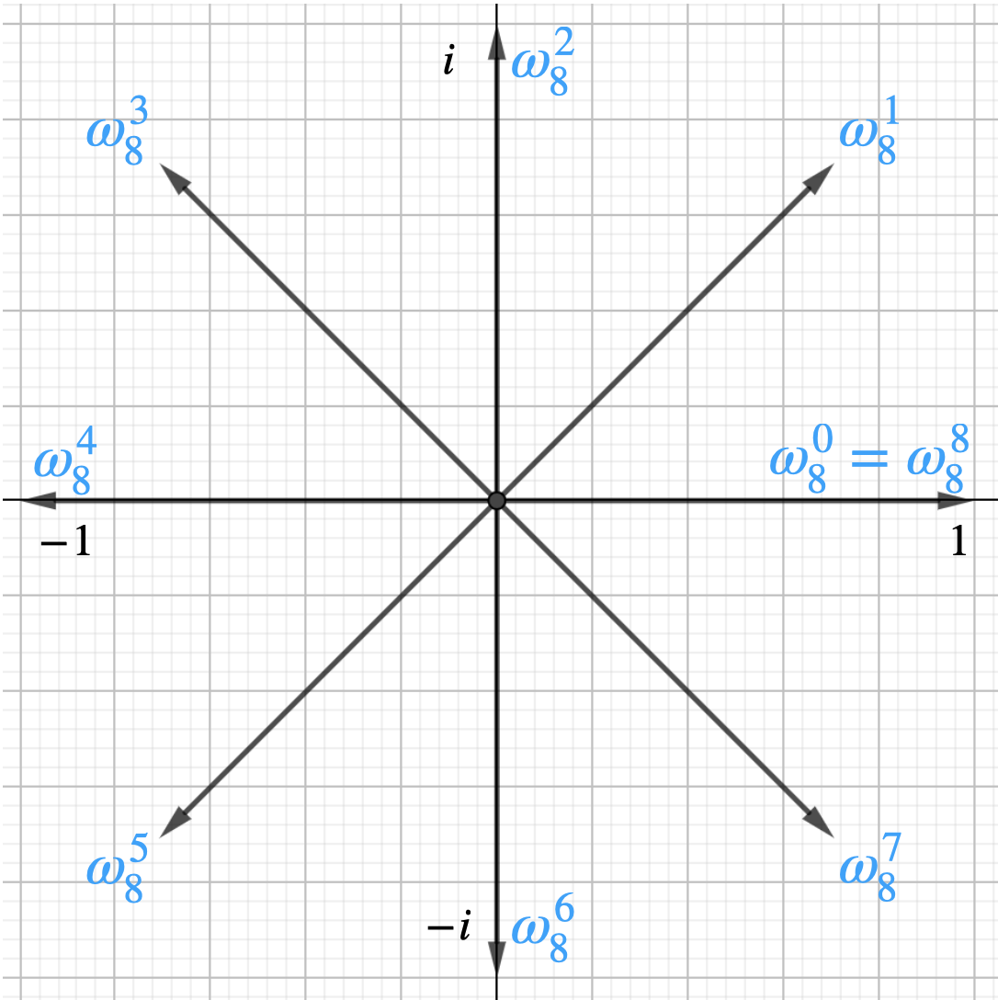
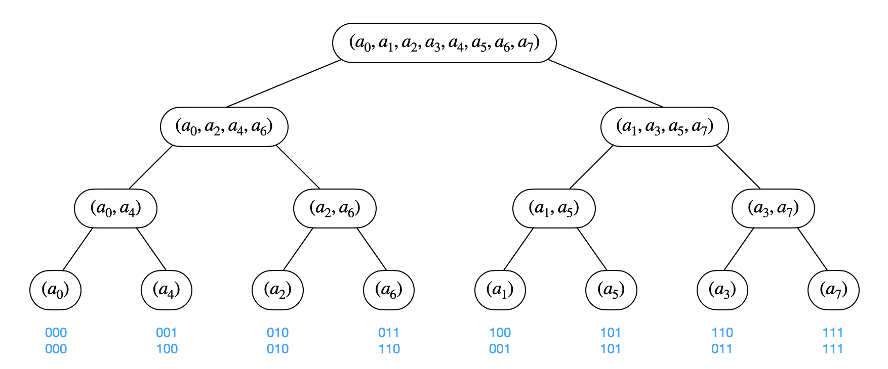

快速傅立叶变换学习笔记
参考：《算法导论》P527-541.
Brief Introduction
多项式在系数表示下的乘法需要 $O(n^2)$ 的时间，但在点值表示下的乘法仅需 $O(n)$ 的时间，离散傅立叶变换（DFT）提供了将多项式从系数表示转换到点值表示的方法，而其逆运算（IDFT）将多项式从点值表示转换到系数表示。为了方便，我们常选用单位复数根作为这些点。利用单位复数根的性质，快速傅立叶变换（FFT）采用分治的思路将复杂度降低至 $O(n\lg n)$ ——分别计算奇数项和偶数项，然后合并；而运用可逆矩阵与范德蒙德矩阵等知识，可以推出逆FFT的公式，并发现其与FFT有惊人的相似性。递归实现的FFT效率不是很高，常数大，可将其改为迭代形式，不过自底而上的迭代实现需要知道递归树中叶子节点的顺序——我们发现该顺序正好是位逆序置换，可以预处理出来。
系数表达与点值表达
系数表达：用向量 $a=(a_0,a_1,\cdots,a_{n-1})$ 表示一个 $n-1$ 次多项式：$A(x)=\sum\limits_{i=0}^{n-1}a_ix^i$.
点值表达：用 $n$ 个点值对所组成的集合 ${(x_0,y_0),(x_1,y_1),\cdots,(x_{n-1},y_{n-1})}$ 表示多项式，其中所有 $x_k$ 各不相同且 $y_k=A(x_k)$. 可以证明，$n$ 个点能唯一确定一个 $n-1$ 次多项式。显然，一个多项式有多种不同的点值表示方法。
系数表达转点值表达：取 $n$ 个不同横坐标，算一下它们的纵坐标，得到 $n$ 个点。这样做是 $\Theta(n^2)$ 的，使用 $\textbf{FFT}$ 可做到 $\Theta(n\lg n)$.
点值表达转系数表达：运用拉格朗日插值可以 $\Theta(n^2)$ 求出系数表达，使用 $\textbf{IFFT}$ 可做到 $\Theta(n\lg n)$.
单位复数根
$n$ 次单位复数根是满足 $\omega^n=1$ 的那些复数 $\omega$，正好有 $n$ 个：$e^{2\pi ik/n},,k=0,1,\cdots,n-1$. 证明：
$$
\omega^n={(e^{2\pi ik/n})}^n=e^{2\pi ik}={(-1)}^{2k}=1\quad\quad\blacksquare
$$
称 $\omega_n=e^{2\pi i/n}=\cos\left(\frac{2\pi}{n}\right)+i\sin\left(\frac{2\pi}{n}\right)$ 为主 $n$ 次单位根，其他单位复数根都是 $\omega_n$ 的幂次。
如果画出复平面，则 $n$ 个 $n$ 次单位复数根：$\omega_n^0,\omega_n^1,\cdots,\omega_n^n$ 把平面分均分成了 $n$ 块（注意复数相乘=模长相乘，幅角相加）：

单位复数根的基本性质
消去引理：对任意整数 $n\geqslant 0,,k\geqslant 0,,d\geqslant 0$，有：
$$
\omega_{dn}^{dk}=\omega_{n}^k
$$
证：
$$
\omega_{dn}^{dk}=e^{2\pi i dk/dn}=e^{2\pi i k/n}=\omega_{n}^k\quad\quad\blacksquare
$$直观理解：分成 $dn$ 份的第 $dk$ 个点和分成 $n$ 份的第 $k$ 个点显然是同一个点。
推论：对任意偶数 $n>0$，有：
$$
\omega_n^{n/2}=\omega_2=-1
$$直观理解：分成偶数份时，中间那个点显然是 $(-1,0)$.
折半引理：如果 $n>0$ 为偶数，那么 $n$ 个 $n$ 次单位复数根的平方的集合就是 $n/2$ 个 $n/2$ 次单位复数根的集合。
证：对于 $\forall k\in[0,n/2)$，根据单位复数根的运算和消去引理有：
$$
\left(\omega_n^k\right)^2=\left(\omega_n^{k+n/2}\right)^2=\omega_n^{2k}=\omega_{n/2}^k\quad\quad\blacksquare
$$直观理解：注意这里单位复数根相乘其实就是幅角相加（长度始终为 $1$），所以 $\left(\omega_n^k\right)^2$ 就是分成 $n$ 份的第 $2k$ 份。
求和引理：对任意整数 $n\geqslant1$ 和不能被 $n$ 整除的非负整数 $k$，有：
$$
\sum_{j=0}^{n-1}\left(\omega_n^k\right)^j=0
$$
证：等比数列求和公式也适用于复数：
$$
\sum_{j=0}^{n-1}\left(\omega_n^k\right)^j=\frac{1-\left(\omega_n^k\right)^n}{1-\omega_n^k}=\frac{\omega_n^{nk}-1}{\omega_n^k-1}=\frac{\omega_1^k-1}{\omega_n^k-1}=0\quad\quad\blacksquare
$$
$\textbf{DFT}$：系数表达 $\to$ 点值表达
特殊地选取 $n$ 个点：对于多项式 $A(x)=\sum\limits_{i=0}^{n-1}a_ix^i$，我们取它在 $n$ 个 $n$ 次单位复数根 $\omega_n^0,\omega_n^1,\cdots,\omega_n^{n-1}$ 处的点为其点值表达。即设
$$
y_k=A(\omega_n^k)=\sum_{i=0}^{n-1}a_i\omega_n^{ki}
$$
称向量 $y=(y_0,y_1,\cdots,y_{n-1})$ 为系数向量 $a=(a_0,a_1,\cdots a_{n-1})$ 的离散傅立叶变换。
上述过程只说明了我们选点的特殊，直接算仍是 $\Theta(n^2)$，$\textbf{FFT}$ 利用复数单位根的性质将其优化到 $\Theta(n\lg n)$.
$\textbf{FFT}$：采用分治策略
假设 $n$ 是 $2$ 的幂次！
按照下标的奇偶分组，设 $\begin{cases}A^{[0]}(x)=a_0+a_2x+a_4x^2+\cdots+a_{n-2}x^{n/2-1}\A^{[1]}(x)=a_1+a_3x+a_5x^2+\cdots+a_{n-1}x^{n/2-1}\end{cases}$，于是：
$$
A(x)=\left(a_0+a_2x^2+a_4x^4+\cdots+a_{n-2}x^{n-2}\right)+\left(a_1x+a_3x^3+a_5x^5+\cdots+a_{n-1}x^{n-1}\right)
=A^{[0]}(x^2)+xA^{[1]}(x^2)
$$
所以，欲求 $A(x)$ 在 $\omega_n^0,\omega_n^1,\cdots,\omega_n^{n-1}$ 处的取值，只需要求 $A^{[0]}(x)$ 和 $A^{[1]}(x)$ 在 $\left(\omega_n^0\right)^2,\left(\omega_n^1\right)^2,\cdots,\left(\omega_n^{n-1}\right)^2$ 处的取值。
注意，根据折半引理，上述 $n$ 个值其实是 $n/2$ 个 $n/2$ 次单位复数根 $\omega_{n/2}^0,\omega_{n/2}^1,\cdots,\omega_{n/2}^{n/2-1}$，每个数恰好出现 $2$ 次。所以，我们把原问题划分成了两个规模为一半的子问题，于是 $\textbf{FFT}$ 的复杂度为：$T(n)=2T(n/2)+\Theta(n)=\Theta(n\lg n)$.
$\textbf{IDFT}$：点值表达 $\to$ 系数表达
现在我们已经能在 $\Theta(n\lg n)$ 的时间内将系数表达转换到点值表达，那我们需要转换回去，即完成逆运算。
我们将 $y_k=A(\omega_n^k)=\sum\limits_{i=0}^{n-1}a_i\omega_n^{ki}$ 写作矩阵形式 $y=V_na$：
$$
\begin{bmatrix}y_0\y_1\y_2\y_3\\vdots\y_{n-1}\end{bmatrix}=\begin{bmatrix}1&1&1&1&\cdots&1\1&\omega_n&\omega_n^2&\omega_n^3&\cdots&\omega_n^{n-1}\1&\omega_n^2&\omega_n^4&\omega_n^6&\cdots&\omega_n^{2(n-1)}\1&\omega_n^3&\omega_n^6&\omega_n^9&\cdots&\omega_n^{3(n-1)}\\vdots&\vdots&\vdots&\vdots&\ddots&\vdots\1&\omega_n^{n-1}&\omega_n^{2(n-1)}&\omega_n^{3(n-1)}&\cdots&\omega_n^{(n-1)(n-1)}\end{bmatrix}\begin{bmatrix}a_0\a_1\a_2\a_3\\vdots\a_{n-1}\end{bmatrix}
$$
这里 $V_n$ 是一个由 $\omega_n$ 的幂次填充而成的范德蒙德矩阵。
注意，系数表达就是指向量 $a$，点值表达就是指向量 $y$，所以我们只需要解出 $a=V_n^{-1}y$，就完成了点值表达到系数表达的转换。
对于范德蒙德矩阵，可以验证，$V_n^{-1}$ 的 $(j,k)$ 处元素为 $\omega_n^{-kj}/n$（ $j,k=0,1,\cdots,n-1$ ），所以我们有：
$$
a_k=\frac{1}{n}\sum_{i=0}^{n-1}y_k^i\omega_n^{-ki}
$$
于是乎，我们用 $\omega_n^{-1}$ 替换 $\omega_n$，互换 $a$ 和 $y$，将计算结果的每个元素都除以 $n$，就可以套用之前的 $\textbf{FFT}$ 过程在 $\Theta(n\lg n)$ 的时间内完成 $\textbf{IDFT}$ 的运算。
$\textbf{FFT}$ 的高效实现
递归实现 $\textbf{FFT}$ 的效率不高，我们考虑自底向上迭代实现。自底向上要解决的一个问题就是递归树中叶节点的顺序，我们作递归树如下：

发现，递归树的叶子顺序正好是它在原序列中下标的位逆序置换。预处理出位逆序置换的结果，我们可以完成迭代版 $\textbf{FFT}$ 的实现。
Code
ATT：$n$ 要选取 $2$ 的整数幂。
1 | struct Complex{ |